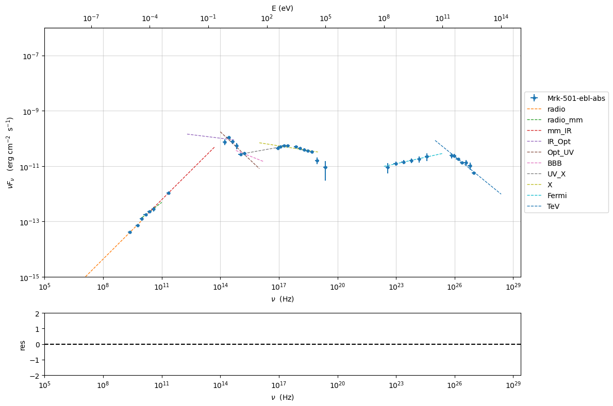

EBL¶
Warning
This model is still experimental, so any feedback that you can provide is welcome
import jetset
print('tested on jetset',jetset.__version__)
tested on jetset 1.2.0rc6
EBL models are implemented using a 2D interpolation where the x and y axes represent the redshift and the frequency, and the z axes represents the value of \(e^{-\tau}\)
Included models are
Franceschini et al. (2008) [Franceschini2008]
Finke et al. (2010) [Finke2010]
Dominguez et al. (2011) [Dominguez2011]
from jetset.template_2Dmodel import EBLAbsorptionTemplate
ebl_dominguez=EBLAbsorptionTemplate.from_name('Dominguez_2010')
ebl_finke=EBLAbsorptionTemplate.from_name('Finke_2010')
ebl_franceschini=EBLAbsorptionTemplate.from_name('Franceschini_2008')
z=0.1
nu=np.logspace(23,30,100)
ebl_dominguez.parameters.z_cosm.val=z
ebl_dominguez.eval(nu=nu)
ebl_finke.parameters.z_cosm.val=z
ebl_finke.eval(nu=nu)
ebl_franceschini.parameters.z_cosm.val=z
ebl_franceschini.eval(nu=nu)
p=ebl_dominguez.plot_model()
ebl_finke.plot_model(p)
ebl_franceschini.plot_model(p)
p.rescale(y_min=-10,x_max=29)

nu=1E26
z_range=np.linspace(0.001,1,100)
y_fr = np.zeros(z_range.size)
y_fi = np.zeros(z_range.size)
y_do = np.zeros(z_range.size)
for ID,z in enumerate(z_range):
ebl_franceschini.parameters.z_cosm.val=z
ebl_finke.parameters.z_cosm.val=z
ebl_dominguez.parameters.z_cosm.val=z
y_fr[ID]=ebl_franceschini.eval(nu=nu,get_model=True)
y_fi[ID]=ebl_finke.eval(nu=nu,get_model=True)
y_do[ID]=ebl_dominguez.eval(nu=nu,get_model=True)
plt.plot(z_range,y_fr,label='%s'%ebl_franceschini.name)
plt.plot(z_range,y_fi,label='%s'%ebl_finke.name)
plt.plot(z_range,y_do,label='%s'%ebl_dominguez.name)
plt.xlabel('z')
plt.ylabel(r'$exp^{-\tau}$')
plt.legend()
plt.semilogy()
t=plt.title(r'$\nu=%1.1E Hz$'%nu)

%matplotlib inline
z_range=np.linspace(0.001,1,100)
y_fr = np.zeros(z_range.size)
y_fi = np.zeros(z_range.size)
y_do = np.zeros(z_range.size)
nu=1E27
for ID,z in enumerate(z_range):
ebl_franceschini.parameters.z_cosm.val=z
ebl_finke.parameters.z_cosm.val=z
ebl_dominguez.parameters.z_cosm.val=z
y_fr[ID]=ebl_franceschini.eval(nu=nu,get_model=True)
y_fi[ID]=ebl_finke.eval(nu=nu,get_model=True)
y_do[ID]=ebl_dominguez.eval(nu=nu,get_model=True)
plt.plot(z_range,y_fr,label='%s'%ebl_franceschini.name)
plt.plot(z_range,y_fi,label='%s'%ebl_finke.name)
plt.plot(z_range,y_do,label='%s'%ebl_dominguez.name)
plt.xlabel('z')
plt.ylabel(r'$exp^{-\tau}$')
plt.legend()
plt.semilogy()
t=plt.title(r'$\nu=%1.1E Hz$'%nu)
Combine a Jet model with the EBL model¶
To apply the EBL model to a Jet model we need to define a composite model, read the section Composite Models and depending pars for more information regarding the composite models.
We start by combining a Jet model with the EBL absorption model. Please, keep in mind that the EBL absorption model is a multiplicative model, i.e. it has to multiplied and not added to the Jet model.
As first step, we define our Jet model
from jetset.jet_model import Jet
from jetset.model_manager import FitModel
my_jet=Jet(electron_distribution='lppl',name='jet_leptonic')
As second step, we define the EBL model, and we use in this case the Franceschini_2008 model
from jetset.template_2Dmodel import EBLAbsorptionTemplate
ebl_franceschini=EBLAbsorptionTemplate.from_name('Franceschini_2008')
As third step, we add the components models to the the FitModel class, using the FitModel.add_component() method
composite_model=FitModel(nu_size=500,name='EBL corrected')
composite_model.add_component(my_jet)
composite_model.add_component(ebl_franceschini)
/Users/orion/anaconda3/envs/jetset/lib/python3.8/site-packages/jetset/model_manager.py:147: UserWarning: no cosmology defined, using default FlatLambdaCDM(name="Planck13", H0=67.8 km / (Mpc s), Om0=0.307, Tcmb0=2.725 K, Neff=3.05, m_nu=[0. 0. 0.06] eV, Ob0=0.0483)
warnings.warn('no cosmology defined, using default %s'%self.cosmo)
composite_model.show_pars()
| model name | name | par type | units | val | phys. bound. min | phys. bound. max | log | frozen |
|---|---|---|---|---|---|---|---|---|
| jet_leptonic | R | region_size | cm | 5.000000e+15 | 1.000000e+03 | 1.000000e+30 | False | False |
| jet_leptonic | R_H | region_position | cm | 1.000000e+17 | 0.000000e+00 | -- | False | True |
| jet_leptonic | B | magnetic_field | gauss | 1.000000e-01 | 0.000000e+00 | -- | False | False |
| jet_leptonic | beam_obj | beaming | lorentz-factor* | 1.000000e+01 | 1.000000e-04 | -- | False | False |
| jet_leptonic | z_cosm | redshift | 1.000000e-01 | 0.000000e+00 | -- | False | False | |
| jet_leptonic | gmin | low-energy-cut-off | lorentz-factor* | 2.000000e+00 | 1.000000e+00 | 1.000000e+09 | False | False |
| jet_leptonic | gmax | high-energy-cut-off | lorentz-factor* | 1.000000e+06 | 1.000000e+00 | 1.000000e+15 | False | False |
| jet_leptonic | N | emitters_density | 1 / cm3 | 1.000000e+02 | 0.000000e+00 | -- | False | False |
| jet_leptonic | gamma0_log_parab | turn-over-energy | lorentz-factor* | 1.000000e+04 | 1.000000e+00 | 1.000000e+09 | False | False |
| jet_leptonic | s | LE_spectral_slope | 2.000000e+00 | -1.000000e+01 | 1.000000e+01 | False | False | |
| jet_leptonic | r | spectral_curvature | 4.000000e-01 | -1.500000e+01 | 1.500000e+01 | False | False | |
| Franceschini_2008 | z_cosm | redshift | 1.000000e+00 | 0.000000e+00 | -- | False | True |
Important
Starting from version 1.2.0 we have changed the syntax of link_par, please update your scripts
Since, both the Jet model the EBL share the same parameter, i.e. the redshift, we link the two parameters
composite_model.link_par(par_name='z_cosm', from_model='Franceschini_2008', to_model='jet_leptonic')
==> par: z_cosm from model: Franceschini_2008 linked to same parameter in model jet_leptonic
composite_model.show_pars()
| model name | name | par type | units | val | phys. bound. min | phys. bound. max | log | frozen |
|---|---|---|---|---|---|---|---|---|
| jet_leptonic | R | region_size | cm | 5.000000e+15 | 1.000000e+03 | 1.000000e+30 | False | False |
| jet_leptonic | R_H | region_position | cm | 1.000000e+17 | 0.000000e+00 | -- | False | True |
| jet_leptonic | B | magnetic_field | gauss | 1.000000e-01 | 0.000000e+00 | -- | False | False |
| jet_leptonic | beam_obj | beaming | lorentz-factor* | 1.000000e+01 | 1.000000e-04 | -- | False | False |
| jet_leptonic | z_cosm(M) | redshift | 1.000000e-01 | 0.000000e+00 | -- | False | False | |
| jet_leptonic | gmin | low-energy-cut-off | lorentz-factor* | 2.000000e+00 | 1.000000e+00 | 1.000000e+09 | False | False |
| jet_leptonic | gmax | high-energy-cut-off | lorentz-factor* | 1.000000e+06 | 1.000000e+00 | 1.000000e+15 | False | False |
| jet_leptonic | N | emitters_density | 1 / cm3 | 1.000000e+02 | 0.000000e+00 | -- | False | False |
| jet_leptonic | gamma0_log_parab | turn-over-energy | lorentz-factor* | 1.000000e+04 | 1.000000e+00 | 1.000000e+09 | False | False |
| jet_leptonic | s | LE_spectral_slope | 2.000000e+00 | -1.000000e+01 | 1.000000e+01 | False | False | |
| jet_leptonic | r | spectral_curvature | 4.000000e-01 | -1.500000e+01 | 1.500000e+01 | False | False | |
| Franceschini_2008 | z_cosm(L,jet_leptonic) | redshift | -- | -- | -- | False | True |
As you can see, now the parameter z_cosm in Franceschini_2008 is the linked paramter (flagge by the L in parenthesis), and the one belonging to the jet_flaring component is the master one (flagged by the M in parenthesis).
These methods are alternative ways to set a parameter in a composite model
composite_model.jet_leptonic.parameters.z_cosm.val=0.1
composite_model.set_par('jet_leptonic','z_cosm',0.1)
composite_model.set_par(my_jet,'z_cosm',0.1)
Since as default, added components are summed together, so we need to define the correct multiplicative for for the composite model.
composite_model.show_model_components()
--------------------------------------------------------------------------------
Composite model description
--------------------------------------------------------------------------------
name: EBL corrected
type: composite_model
components models:
-model name: jet_leptonic model type: jet
-model name: Franceschini_2008 model type: table2D
--------------------------------------------------------------------------------
This can be done just by writing the mathematical expression as a string, using the model names reported in the model description table, and thatâs it!
composite_model.composite_expr='jet_leptonic*Franceschini_2008'
composite_model.jet_leptonic.IC_nu_size=150
composite_model.eval()
p=composite_model.plot_model()
p.rescale(y_max=-12)

if you want to remove the link from the parameter
composite_model.parameters.reset_dependencies()
composite_model.parameters
| model name | name | par type | units | val | phys. bound. min | phys. bound. max | log | frozen |
|---|---|---|---|---|---|---|---|---|
| jet_leptonic | R | region_size | cm | 5.000000e+15 | 1.000000e+03 | 1.000000e+30 | False | False |
| jet_leptonic | R_H | region_position | cm | 1.000000e+17 | 0.000000e+00 | -- | False | True |
| jet_leptonic | B | magnetic_field | gauss | 1.000000e-01 | 0.000000e+00 | -- | False | False |
| jet_leptonic | beam_obj | beaming | lorentz-factor* | 1.000000e+01 | 1.000000e-04 | -- | False | False |
| jet_leptonic | z_cosm | redshift | 1.000000e-01 | 0.000000e+00 | -- | False | False | |
| jet_leptonic | gmin | low-energy-cut-off | lorentz-factor* | 2.000000e+00 | 1.000000e+00 | 1.000000e+09 | False | False |
| jet_leptonic | gmax | high-energy-cut-off | lorentz-factor* | 1.000000e+06 | 1.000000e+00 | 1.000000e+15 | False | False |
| jet_leptonic | N | emitters_density | 1 / cm3 | 1.000000e+02 | 0.000000e+00 | -- | False | False |
| jet_leptonic | gamma0_log_parab | turn-over-energy | lorentz-factor* | 1.000000e+04 | 1.000000e+00 | 1.000000e+09 | False | False |
| jet_leptonic | s | LE_spectral_slope | 2.000000e+00 | -1.000000e+01 | 1.000000e+01 | False | False | |
| jet_leptonic | r | spectral_curvature | 4.000000e-01 | -1.500000e+01 | 1.500000e+01 | False | False | |
| Franceschini_2008 | z_cosm | redshift | 1.000000e-01 | 0.000000e+00 | -- | False | True |
None
now the two z_cosm parameters are not linkend anymore
Example of model fitting with EBL¶
from jetset.test_data_helper import test_SEDs
from jetset.data_loader import ObsData,Data
test_SEDs
['/Users/orion/anaconda3/envs/jetset/lib/python3.8/site-packages/jetset/test_data/SEDs_data/SED_3C345.ecsv',
'/Users/orion/anaconda3/envs/jetset/lib/python3.8/site-packages/jetset/test_data/SEDs_data/SED_MW_Mrk421_EBL_DEABS.ecsv',
'/Users/orion/anaconda3/envs/jetset/lib/python3.8/site-packages/jetset/test_data/SEDs_data/SED_MW_Mrk501_EBL_ABS.ecsv',
'/Users/orion/anaconda3/envs/jetset/lib/python3.8/site-packages/jetset/test_data/SEDs_data/SED_MW_Mrk501_EBL_DEABS.ecsv']
%matplotlib inline
data=Data.from_file(test_SEDs[2])
sed_data=ObsData(data_table=data)
myPlot=sed_data.plot_sed()
sed_data.group_data(bin_width=0.2)
sed_data.add_systematics(0.1,[10.**6,10.**29])
myPlot.add_data_plot(sed_data,label='rebinned')
myPlot.rescale(y_min=-14,y_max=-9,x_min=9,x_max=29)
================================================================================ * binning data * ---> N bins= 90 ---> bin_widht= 0.2 ================================================================================
/Users/orion/anaconda3/envs/jetset/lib/python3.8/site-packages/astropy/table/table.py:1187: FutureWarning: Using a non-tuple sequence for multidimensional indexing is deprecated; use arr[tuple(seq)] instead of arr[seq]. In the future this will be interpreted as an array index, arr[np.array(seq)], which will result either in an error or a different result. newcol = col[slice_]

from jetset.sed_shaper import SEDShape
my_shape=SEDShape(sed_data)
my_shape.eval_indices(silent=True)
p=my_shape.plot_indices()
p.rescale(y_min=-15,y_max=-6)
================================================================================ * evaluating spectral indices for data * ================================================================================
mm,best_fit=my_shape.sync_fit(check_host_gal_template=True,
Ep_start=None,
minimizer='lsb',
silent=True,
fit_range=[10,21])
================================================================================ * Log-Polynomial fitting of the synchrotron component * ---> first blind fit run, fit range: [10, 21] ---> class: HSP ---> class: HSPTable length=6
| model name | name | val | bestfit val | err + | err - | start val | fit range min | fit range max | frozen |
|---|---|---|---|---|---|---|---|---|---|
| LogCubic | b | -6.411144e-02 | -6.411144e-02 | 7.838965e-03 | -- | -4.778764e-02 | -1.000000e+01 | 0.000000e+00 | False |
| LogCubic | c | -1.751721e-03 | -1.751721e-03 | 1.127030e-03 | -- | 3.576201e-03 | -1.000000e+01 | 1.000000e+01 | False |
| LogCubic | Ep | 1.703747e+01 | 1.703747e+01 | 9.437354e-02 | -- | 1.626870e+01 | 0.000000e+00 | 3.000000e+01 | False |
| LogCubic | Sp | -1.030068e+01 | -1.030068e+01 | 1.884114e-02 | -- | -1.025412e+01 | -3.000000e+01 | 0.000000e+00 | False |
| host_galaxy | nuFnu_p_host | -1.006557e+01 | -1.006557e+01 | 5.462528e-02 | -- | -1.025412e+01 | -1.225412e+01 | -8.254123e+00 | False |
| host_galaxy | nu_scale | 1.730764e-02 | 1.730764e-02 | 3.694887e-03 | -- | 0.000000e+00 | -5.000000e-01 | 5.000000e-01 | False |
---> sync nu_p=+1.703747e+01 (err=+9.437354e-02) nuFnu_p=-1.030068e+01 (err=+1.884114e-02) curv.=-6.411144e-02 (err=+7.838965e-03)
================================================================================
my_shape.IC_fit(fit_range=[23,29],minimizer='minuit')
p=my_shape.plot_shape_fit()
p.rescale(y_min=-15)
================================================================================ * Log-Polynomial fitting of the IC component * ---> fit range: [23, 29] ---> LogCubic fit ------------------------------------------------------------------------- Fit report Model: IC-shape-fit
/Users/orion/anaconda3/envs/jetset/lib/python3.8/site-packages/jetset/minimizer.py:847: IMinuitWarning: errordef not set, using 1 (appropriate for least-squares)
self.mesg=self.minuit_fun.migrad(ncall=max_ev)
| model name | name | par type | units | val | phys. bound. min | phys. bound. max | log | frozen |
|---|---|---|---|---|---|---|---|---|
| LogCubic | b | curvature | -1.565399e-01 | -1.000000e+01 | 0.000000e+00 | False | False | |
| LogCubic | c | third-degree | -4.351917e-02 | -1.000000e+01 | 1.000000e+01 | False | False | |
| LogCubic | Ep | peak freq | Hz | 2.529709e+01 | 0.000000e+00 | 3.000000e+01 | True | False |
| LogCubic | Sp | peak flux | erg / (cm2 s) | -1.058825e+01 | -3.000000e+01 | 0.000000e+00 | True | False |
converged=True
calls=50
mesg=
| FCN = 2.632 | Nfcn = 50 | |||
| EDM = 1.7e-06 (Goal: 0.0002) | ||||
| Valid Minimum | Valid Parameters | No Parameters at limit | ||
| Below EDM threshold (goal x 10) | Below call limit | |||
| Covariance | Hesse ok | Accurate | Pos. def. | Not forced |
| Name | Value | Hesse Error | Minos Error- | Minos Error+ | Limit- | Limit+ | Fixed | |
|---|---|---|---|---|---|---|---|---|
| 0 | par_0 | -0.157 | 0.026 | -10 | 0 | |||
| 1 | par_1 | -0.044 | 0.020 | -10 | 10 | |||
| 2 | par_2 | 25.30 | 0.18 | 0 | 30 | |||
| 3 | par_3 | -10.59 | 0.05 | -30 | 0 |
| par_0 | par_1 | par_2 | par_3 | |
|---|---|---|---|---|
| par_0 | 0.000651 | 0.00033 (0.636) | -0.00289 (-0.622) | -9.45e-05 (-0.073) |
| par_1 | 0.00033 (0.636) | 0.000413 | -0.00348 (-0.942) | 0.000582 (0.567) |
| par_2 | -0.00289 (-0.622) | -0.00348 (-0.942) | 0.033 | -0.00612 (-0.667) |
| par_3 | -9.45e-05 (-0.073) | 0.000582 (0.567) | -0.00612 (-0.667) | 0.00255 |
dof=7
chisq=2.631978, chisq/red=0.375997 null hypothesis sig=0.916836
stats without the UL
dof UL=7
chisq=2.631978, chisq/red=0.375997 null hypothesis sig=0.916836
best fit pars
| model name | name | val | bestfit val | err + | err - | start val | fit range min | fit range max | frozen |
|---|---|---|---|---|---|---|---|---|---|
| LogCubic | b | -1.565399e-01 | -1.565399e-01 | 2.551779e-02 | -- | -1.000000e+00 | -1.000000e+01 | 0.000000e+00 | False |
| LogCubic | c | -4.351917e-02 | -4.351917e-02 | 2.032066e-02 | -- | -1.000000e+00 | -1.000000e+01 | 1.000000e+01 | False |
| LogCubic | Ep | 2.529709e+01 | 2.529709e+01 | 1.817241e-01 | -- | 2.536916e+01 | 0.000000e+00 | 3.000000e+01 | False |
| LogCubic | Sp | -1.058825e+01 | -1.058825e+01 | 5.046950e-02 | -- | -1.000000e+01 | -3.000000e+01 | 0.000000e+00 | False |
-------------------------------------------------------------------------
| model name | name | val | bestfit val | err + | err - | start val | fit range min | fit range max | frozen |
|---|---|---|---|---|---|---|---|---|---|
| LogCubic | b | -1.565399e-01 | -1.565399e-01 | 2.551779e-02 | -- | -1.000000e+00 | -1.000000e+01 | 0.000000e+00 | False |
| LogCubic | c | -4.351917e-02 | -4.351917e-02 | 2.032066e-02 | -- | -1.000000e+00 | -1.000000e+01 | 1.000000e+01 | False |
| LogCubic | Ep | 2.529709e+01 | 2.529709e+01 | 1.817241e-01 | -- | 2.536916e+01 | 0.000000e+00 | 3.000000e+01 | False |
| LogCubic | Sp | -1.058825e+01 | -1.058825e+01 | 5.046950e-02 | -- | -1.000000e+01 | -3.000000e+01 | 0.000000e+00 | False |
---> IC nu_p=+2.529709e+01 (err=+1.817241e-01) nuFnu_p=-1.058825e+01 (err=+5.046950e-02) curv.=-1.565399e-01 (err=+2.551779e-02)
================================================================================

from jetset.obs_constrain import ObsConstrain
from jetset.model_manager import FitModel
sed_obspar=ObsConstrain(beaming=25,
B_range=[0.001,0.1],
distr_e='lppl',
t_var_sec=3*86400,
nu_cut_IR=1E11,
SEDShape=my_shape)
prefit_jet=sed_obspar.constrain_SSC_model(electron_distribution_log_values=False, silent=True)
prefit_jet.save_model('prefit_jet_gal_templ.pkl')
================================================================================ * constrains parameters from observable *
/Users/orion/anaconda3/envs/jetset/lib/python3.8/site-packages/jetset/obs_constrain.py:650: RankWarning: Polyfit may be poorly conditioned
return func(*args, **kwargs),completed
| model name | name | par type | units | val | phys. bound. min | phys. bound. max | log | frozen |
|---|---|---|---|---|---|---|---|---|
| jet_leptonic | R | region_size | cm | 1.057083e+16 | 1.000000e+03 | 1.000000e+30 | False | False |
| jet_leptonic | R_H | region_position | cm | 1.000000e+17 | 0.000000e+00 | -- | False | True |
| jet_leptonic | B | magnetic_field | gauss | 5.050000e-02 | 0.000000e+00 | -- | False | False |
| jet_leptonic | beam_obj | beaming | lorentz-factor* | 2.500000e+01 | 1.000000e-04 | -- | False | False |
| jet_leptonic | z_cosm | redshift | 3.360000e-02 | 0.000000e+00 | -- | False | False | |
| jet_leptonic | gmin | low-energy-cut-off | lorentz-factor* | 1.487509e+02 | 1.000000e+00 | 1.000000e+09 | False | False |
| jet_leptonic | gmax | high-energy-cut-off | lorentz-factor* | 2.310708e+06 | 1.000000e+00 | 1.000000e+15 | False | False |
| jet_leptonic | N | emitters_density | 1 / cm3 | 2.989983e+01 | 0.000000e+00 | -- | False | False |
| jet_leptonic | gamma0_log_parab | turn-over-energy | lorentz-factor* | 1.045843e+04 | 1.000000e+00 | 1.000000e+09 | False | False |
| jet_leptonic | s | LE_spectral_slope | 2.248787e+00 | -1.000000e+01 | 1.000000e+01 | False | False | |
| jet_leptonic | r | spectral_curvature | 3.205572e-01 | -1.500000e+01 | 1.500000e+01 | False | False |
================================================================================
composite_model=FitModel(nu_size=500,name='EBL corrected',template=my_shape.host_gal)
composite_model.add_component(prefit_jet)
composite_model.eval()
composite_model.plot_model()
/Users/orion/anaconda3/envs/jetset/lib/python3.8/site-packages/jetset/model_manager.py:147: UserWarning: no cosmology defined, using default FlatLambdaCDM(name="Planck13", H0=67.8 km / (Mpc s), Om0=0.307, Tcmb0=2.725 K, Neff=3.05, m_nu=[0. 0. 0.06] eV, Ob0=0.0483)
warnings.warn('no cosmology defined, using default %s'%self.cosmo)
<jetset.plot_sedfit.PlotSED at 0x7f8813d10820>

from jetset.template_2Dmodel import EBLAbsorptionTemplate
ebl_franceschini=EBLAbsorptionTemplate.from_name('Franceschini_2008')
composite_model.add_component(ebl_franceschini)
composite_model.link_par(par_name='z_cosm', from_model='Franceschini_2008', to_model='jet_leptonic')
composite_model.composite_expr='(jet_leptonic+host_galaxy)*Franceschini_2008'
==> par: z_cosm from model: Franceschini_2008 linked to same parameter in model jet_leptonic
composite_model.show_model()
--------------------------------------------------------------------------------
Composite model description
--------------------------------------------------------------------------------
name: EBL corrected
type: composite_model
components models:
-model name: host_galaxy model type: template
-model name: jet_leptonic model type: jet
-model name: Franceschini_2008 model type: table2D
--------------------------------------------------------------------------------
individual component description
--------------------------------------------------------------------------------
model description
--------------------------------------------------------------------------------
name: host_galaxy
type: template
--------------------------------------------------------------------------------
| model name | name | par type | units | val | phys. bound. min | phys. bound. max | log | frozen |
|---|---|---|---|---|---|---|---|---|
| host_galaxy | nuFnu_p_host | nuFnu-scale | erg / (cm2 s) | -1.006557e+01 | -2.000000e+01 | 2.000000e+01 | False | False |
| host_galaxy | nu_scale | nu-scale | Hz | 1.730764e-02 | -2.000000e+00 | 2.000000e+00 | False | False |
--------------------------------------------------------------------------------
--------------------------------------------------------------------------------
jet model description
--------------------------------------------------------------------------------
name: jet_leptonic
electrons distribution:
type: lppl
gamma energy grid size: 201
gmin grid : 1.487509e+02
gmax grid : 2.310708e+06
normalization True
log-values False
radiative fields:
seed photons grid size: 100
IC emission grid size: 100
source emissivity lower bound : 1.000000e-120
spectral components:
name:Sum, state: on
name:Sync, state: self-abs
name:SSC, state: on
external fields transformation method: blob
SED info:
nu grid size jetkernel: 1000
nu grid size: 500
nu mix (Hz): 1.000000e+06
nu max (Hz): 1.000000e+30
flux plot lower bound : 1.000000e-30
--------------------------------------------------------------------------------
| model name | name | par type | units | val | phys. bound. min | phys. bound. max | log | frozen |
|---|---|---|---|---|---|---|---|---|
| jet_leptonic | R | region_size | cm | 1.057083e+16 | 1.000000e+03 | 1.000000e+30 | False | False |
| jet_leptonic | R_H | region_position | cm | 1.000000e+17 | 0.000000e+00 | -- | False | True |
| jet_leptonic | B | magnetic_field | gauss | 5.050000e-02 | 0.000000e+00 | -- | False | False |
| jet_leptonic | beam_obj | beaming | lorentz-factor* | 2.500000e+01 | 1.000000e-04 | -- | False | False |
| jet_leptonic | z_cosm(M) | redshift | 3.360000e-02 | 0.000000e+00 | -- | False | False | |
| jet_leptonic | gmin | low-energy-cut-off | lorentz-factor* | 1.487509e+02 | 1.000000e+00 | 1.000000e+09 | False | False |
| jet_leptonic | gmax | high-energy-cut-off | lorentz-factor* | 2.310708e+06 | 1.000000e+00 | 1.000000e+15 | False | False |
| jet_leptonic | N | emitters_density | 1 / cm3 | 2.989983e+01 | 0.000000e+00 | -- | False | False |
| jet_leptonic | gamma0_log_parab | turn-over-energy | lorentz-factor* | 1.045843e+04 | 1.000000e+00 | 1.000000e+09 | False | False |
| jet_leptonic | s | LE_spectral_slope | 2.248787e+00 | -1.000000e+01 | 1.000000e+01 | False | False | |
| jet_leptonic | r | spectral_curvature | 3.205572e-01 | -1.500000e+01 | 1.500000e+01 | False | False |
--------------------------------------------------------------------------------
--------------------------------------------------------------------------------
model description
--------------------------------------------------------------------------------
name: Franceschini_2008
type: table2D
--------------------------------------------------------------------------------
| model name | name | par type | units | val | phys. bound. min | phys. bound. max | log | frozen |
|---|---|---|---|---|---|---|---|---|
| Franceschini_2008 | z_cosm(L,jet_leptonic) | redshift | -- | -- | -- | False | True |
--------------------------------------------------------------------------------
--------------------------------------------------------------------------------
composite_model.eval()
composite_model.plot_model()
<jetset.plot_sedfit.PlotSED at 0x7f8813a04fd0>
from jetset.minimizer import ModelMinimizer
from jetset.model_manager import FitModel
from jetset.jet_model import Jet
composite_model.freeze(prefit_jet,'z_cosm')
composite_model.freeze(prefit_jet,'R_H')
composite_model.jet_leptonic.parameters.beam_obj.fit_range=[5,50]
composite_model.jet_leptonic.parameters.R.fit_range=[10**15.5,10**17.5]
composite_model.jet_leptonic.parameters.gmax.fit_range=[1E4,1E8]
composite_model.jet_leptonic.parameters.z_cosm.val=0.03
composite_model.host_galaxy.parameters.nuFnu_p_host.frozen=False
composite_model.host_galaxy.parameters.nu_scale.frozen=True
composite_model.jet_leptonic.nu_size=200
composite_model.jet_leptonic.IC_nu_size=100
model_minimizer_lsb=ModelMinimizer('lsb')
best_fit=model_minimizer_lsb.fit(composite_model,sed_data,1E11,1E29,fitname='SSC-best-fit-lsb',repeat=3)
filtering data in fit range = [1.000000e+11,1.000000e+29] data length 31 ================================================================================ * start fit process * ----- fit run: 0
0it [00:00, ?it/s]
- best chisq=8.65708e+00
fit run: 1
- old chisq=8.65708e+00
0it [00:00, ?it/s]
- best chisq=8.65708e+00
fit run: 2
- old chisq=8.65708e+00
0it [00:00, ?it/s]
- best chisq=8.65708e+00
-------------------------------------------------------------------------
Fit report
Model: SSC-best-fit-lsb
| model name | name | par type | units | val | phys. bound. min | phys. bound. max | log | frozen |
|---|---|---|---|---|---|---|---|---|
| host_galaxy | nuFnu_p_host | nuFnu-scale | erg / (cm2 s) | -1.005318e+01 | -2.000000e+01 | 2.000000e+01 | False | False |
| host_galaxy | nu_scale | nu-scale | Hz | 1.730764e-02 | -2.000000e+00 | 2.000000e+00 | False | True |
| jet_leptonic | R | region_size | cm | 1.331857e+16 | 1.000000e+03 | 1.000000e+30 | False | False |
| jet_leptonic | R_H | region_position | cm | 1.000000e+17 | 0.000000e+00 | -- | False | True |
| jet_leptonic | B | magnetic_field | gauss | 1.430901e-02 | 0.000000e+00 | -- | False | False |
| jet_leptonic | beam_obj | beaming | lorentz-factor* | 3.825207e+01 | 1.000000e-04 | -- | False | False |
| jet_leptonic | z_cosm(M) | redshift | 3.000000e-02 | 0.000000e+00 | -- | False | True | |
| jet_leptonic | gmin | low-energy-cut-off | lorentz-factor* | 9.433759e+01 | 1.000000e+00 | 1.000000e+09 | False | False |
| jet_leptonic | gmax | high-energy-cut-off | lorentz-factor* | 2.114571e+06 | 1.000000e+00 | 1.000000e+15 | False | False |
| jet_leptonic | N | emitters_density | 1 / cm3 | 3.099671e+01 | 0.000000e+00 | -- | False | False |
| jet_leptonic | gamma0_log_parab | turn-over-energy | lorentz-factor* | 8.655846e+03 | 1.000000e+00 | 1.000000e+09 | False | False |
| jet_leptonic | s | LE_spectral_slope | 2.213503e+00 | -1.000000e+01 | 1.000000e+01 | False | False | |
| jet_leptonic | r | spectral_curvature | 2.448936e-01 | -1.500000e+01 | 1.500000e+01 | False | False | |
| Franceschini_2008 | z_cosm(L,jet_leptonic) | redshift | -- | -- | -- | False | True |
converged=True
calls=21
mesg=
'The relative error between two consecutive iterates is at most 0.000000'
dof=21
chisq=8.657084, chisq/red=0.412242 null hypothesis sig=0.991665
best fit pars
| model name | name | val | bestfit val | err + | err - | start val | fit range min | fit range max | frozen |
|---|---|---|---|---|---|---|---|---|---|
| host_galaxy | nuFnu_p_host | -1.005318e+01 | -1.005318e+01 | 3.308679e-02 | -- | -1.006557e+01 | -1.225412e+01 | -8.254123e+00 | False |
| host_galaxy | nu_scale | 1.730764e-02 | -- | -- | -- | 1.730764e-02 | -5.000000e-01 | 5.000000e-01 | True |
| jet_leptonic | R | 1.331857e+16 | 1.331857e+16 | 1.137047e+16 | -- | 1.057083e+16 | 3.162278e+15 | 3.162278e+17 | False |
| jet_leptonic | R_H | 1.000000e+17 | -- | -- | -- | 1.000000e+17 | 0.000000e+00 | -- | True |
| jet_leptonic | B | 1.430901e-02 | 1.430901e-02 | 5.822142e-03 | -- | 5.050000e-02 | 0.000000e+00 | -- | False |
| jet_leptonic | beam_obj | 3.825207e+01 | 3.825207e+01 | 1.194162e+01 | -- | 2.500000e+01 | 5.000000e+00 | 5.000000e+01 | False |
| jet_leptonic | z_cosm(M) | 3.000000e-02 | -- | -- | -- | 3.000000e-02 | 0.000000e+00 | -- | True |
| jet_leptonic | gmin | 9.433759e+01 | 9.433759e+01 | 8.623754e+01 | -- | 1.487509e+02 | 1.000000e+00 | 1.000000e+09 | False |
| jet_leptonic | gmax | 2.114571e+06 | 2.114571e+06 | 6.522991e+05 | -- | 2.310708e+06 | 1.000000e+04 | 1.000000e+08 | False |
| jet_leptonic | N | 3.099671e+01 | 3.099671e+01 | 2.839969e+01 | -- | 2.989983e+01 | 0.000000e+00 | -- | False |
| jet_leptonic | gamma0_log_parab | 8.655846e+03 | 8.655846e+03 | 1.251062e+04 | -- | 1.045843e+04 | 1.000000e+00 | 1.000000e+09 | False |
| jet_leptonic | s | 2.213503e+00 | 2.213503e+00 | 2.137809e-01 | -- | 2.248787e+00 | -1.000000e+01 | 1.000000e+01 | False |
| jet_leptonic | r | 2.448936e-01 | 2.448936e-01 | 4.613658e-02 | -- | 3.205572e-01 | -1.500000e+01 | 1.500000e+01 | False |
| Franceschini_2008 | z_cosm(L,jet_leptonic) | 3.000000e-02 | -- | -- | -- | -- | 0.000000e+00 | -- | True |
-------------------------------------------------------------------------
================================================================================
p=composite_model.plot_model(sed_data=sed_data)